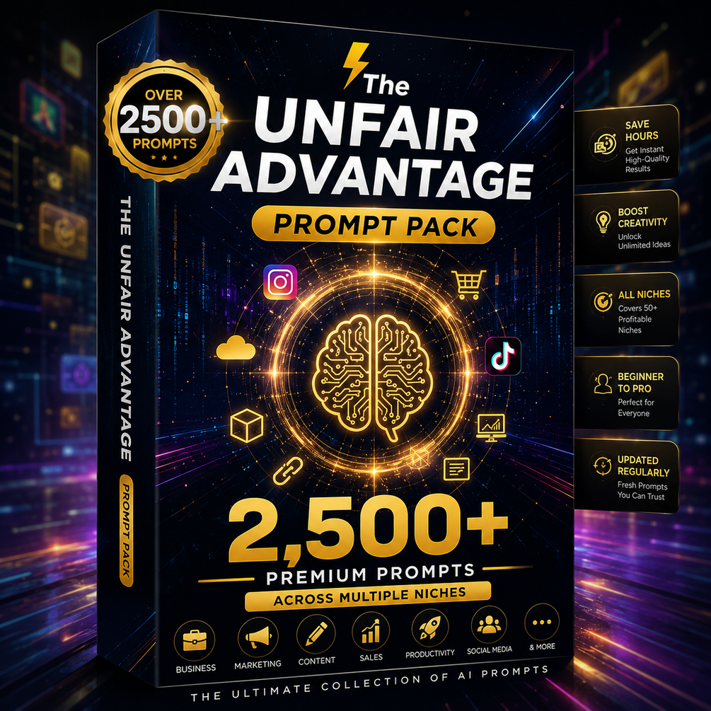

Threads｜UnfairClaudePrompts：8 個 Claude 個人品牌與網站提示詞的可用工作流

UnfairClaudePrompts（@unfairclaudeprompts）在 Threads 分享一串英文提示詞，主張 Claude 現在可以在一個下午免費建立完整個人品牌 identity 與網站，並列出 8 個 prompts。串文中同時導流到 Gumroad 的 The Unfair Advantage Pack，宣稱有 2,500+ prompts。
原貼文的 8 個 prompt 模組
這組提示詞其實不是「一鍵建立品牌」，而是把個人品牌 MVP 拆成 8 個可逐步問 AI 的模組：
- Personal Brand Positioning：用個人品牌策略師角度，根據專長、人格與想吸引的受眾，定義「我以什麼聞名、服務誰、哪個信念與他人不同」。
- Signature Point of View：找出 3 個強烈、略帶逆向思考的專業觀點，並轉成貼文 hook。
- Personal Website Structure：設計一頁式個人網站資訊架構，包含 bio、what-I-do、proof/credibility 與 CTA。
- Bio & Homepage Copy：產出短 bio 與首頁 headline，提供專業版與對話版語氣。
- Visual Identity for a Person, Not a Company：建議個人品牌的色彩、字體搭配與 headshot 風格，並區分個人品牌與公司品牌。
- Content Pillars Around My Expertise：根據專長與觀點建立 3–4 個內容支柱，每個支柱產 5 個 Threads 貼文想法。
- Credibility Section Without a Track Record：沒有媒體報導或大客戶時，用成果、流程透明度與專業深度建立可信度。
- One-Afternoon Personal Brand Checklist：把上述任務排成最快 impact 的一日下午 checklist，並標註不可跳過的 3 步。
圖片描述
保存圖片來自串文連出的 Gumroad 預覽圖：黑金科技感產品盒視覺，主標為「The UNFAIR ADVANTAGE Prompt Pack」，寫有「Over 2500+ Prompts」「2,500+ Premium Prompts」「Across Multiple Niches」，右側列出 Save Hours、Boost Creativity、All Niches、Beginner to Pro、Updated Regularly。這張圖是付費 prompt pack 的宣傳圖，不是 Claude 實際生成網站或品牌識別的成果截圖。
官方來源查核：Claude 能做什麼？
Anthropic 官方 Projects 發布文說明，Artifacts 可讓 Claude 生成 code snippets、text documents、graphics、diagrams 或 website designs，並在對話旁以 dedicated window 顯示。Claude Help Center 也列出 Artifacts 可包含 code snippets、single-page HTML websites 等內容。
Claude 的 Publish and Share Artifacts 文件確認，Free / Pro / Max 可以 publish artifacts，讓任何有連結的人查看與互動。Claude Code Docs 也說明 artifacts 可把 Claude Code session output 變成 claude.ai 上 live, interactive pages，可保持 private、分享給組織或 publish to a public link。
因此，「Claude 可以協助產出網站結構、文案、視覺方向與單頁網站 prototype」是可被官方能力支持的；但「一個下午完成 entire brand identity and website」仍取決於使用者是否已有清楚定位、素材、案例、照片、域名、部署方式與審稿流程。
可重用成課程的工作流
這則適合整理成個人品牌課/AI 實作課的一個 90–180 分鐘練習：
- 先要求學員填入專長、受眾、服務場景、想被記住的觀點。
- 用 Claude 生成定位與 3 個 signature POV。
- 把定位轉成一頁式網站架構與首頁文案。
- 再讓 Claude 產出單頁 HTML / Artifact prototype。
- 最後人工檢查：是否真有差異化、是否有證據、CTA 是否明確、語氣是否像本人。
風險與限制
- Prompt pack 是商業導流內容，數量多不等於品質高；應抽樣測試，而不是把「2,500+」當成價值保證。
- 個人品牌不能只靠 AI 文字堆砌，最重要的是真實專長、案例、作品、觀點與可驗證成果。
- 視覺識別需要檢查可讀性、無障礙、色彩一致性與授權素材。
- 若要公開網站，仍要處理域名、部署、SEO、表單隱私、Cookie/分析工具與聯絡資訊安全。
- 「免費」通常指 Claude/Artifacts 的某些方案功能可用；使用額度、模型、publish 能力與商業使用限制需以 Anthropic 當下條款為準。